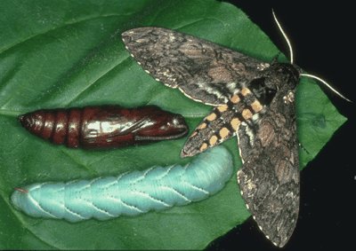

Manduca sexta
Return to Dominick Home Page

A caterpillar, pupa and adult of Manduca sexta are shown sitting on a tobacco leaf, the natural food for this insect. A related and very similar looking insect eats tomato. The caterpillar in the picture is not a normal color as it has been raised in a laboratory on artificial food. The caterpillar would normally be the color of the leaf. The caterpillar's blood contains a blue colored protein called insecticyanin, which is why the caterpillar in the picture is blue. When the caterpillar eats the leaf, it ingests yellow carotanoid molecules; these yellow molecules bind to the blue proteins creating a green color (yellow + blue = green). This makes the caterpillar difficult to see by birds looking for a tasty treat.
Interestingly, the nicotine in the leaf is normally toxic, but the caterpillars have a mechanism for selectively sequestering and secreting the nicotine. Perhaps the tobacco companies will offer smokers the chance to become genetic altered to contain insect genes to encode and express nicotine secreting proteins in their kidneys so that they can smoke more. Won't help with cancer but at least it would keep them from becoming adicted... Hmmm...